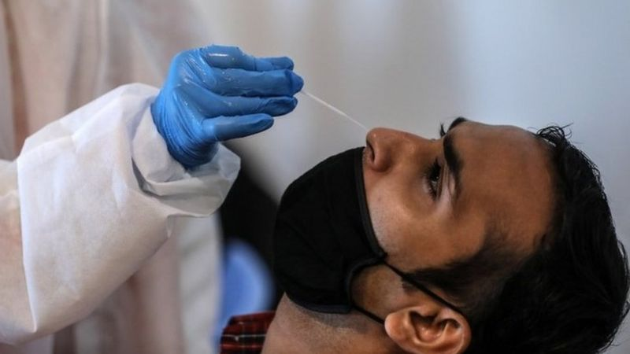
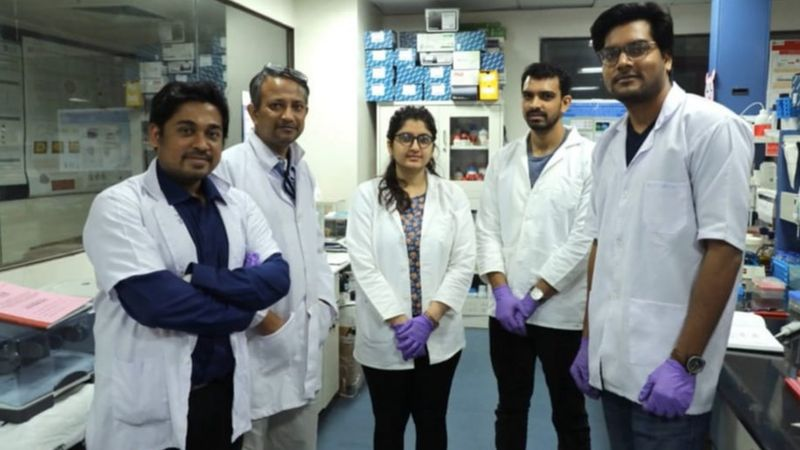
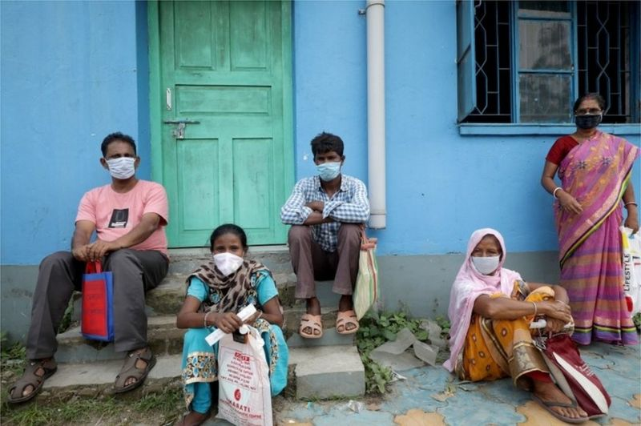
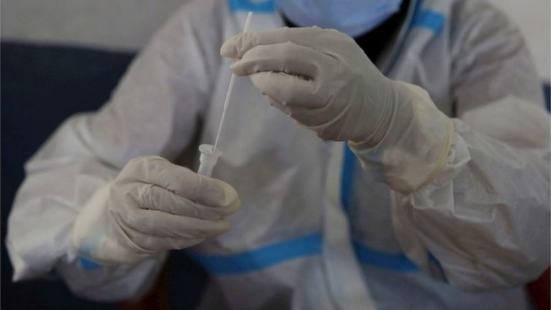

The new Feluda test uses a gene-editing technology to detect the virus
A team of scientists in India has developed an inexpensive paper-based test for coronavirus that could give fast results similar to a pregnancy test. The BBC's Soutik Biswas and Krutika Pathi unpack how it works.
The test, named after a famous Indian fictional detective, is based on a gene-editing technology called Crispr. Scientists estimate that the kit - called Feluda - would return results in under an hour and cost 500 rupees (about $6.75; £5.25).
Feluda will be made by a leading Indian conglomerate, Tata, and could be the world's first paper-based Covid-19 test available in the market.
"This is a simple, precise, reliable, scalable and frugal test," Professor K Vijay Raghavan, principal scientific adviser to the Indian government, told the BBC.
Researchers at the Delhi-based CSIR-Institute of Genomics and Integrative Biology (IGIB), where Feluda was developed, as well as private labs, tried out the test on samples from about 2,000 patients, including ones who had already tested positive for the coronavirus.
They found that the new test had 96% sensitivity and 98% specificity. The accuracy of a test is based on these two proportions. A test that's highly sensitive will detect almost everyone who has the disease; and a test that has high-specificity will correctly rule out almost everyone who doesn't have the disease.
The first ensures not too many false negative results; and the second not too many false positives. India's drug regulator has cleared the test for commercial use.
With more than six million confirmed infections, India has the world's second-highest Covid-19 caseload. More than 100,000 people in the country have died of the disease so far.
After a slow start, India is now testing a million samples a day in more than 1,200 laboratories across the country. It is using two tests.
India still doesn't allow Covid-19 tests from saliva samples
The first is the time-tested, gold standard polymerase chain reaction, or PCR swab tests, which uses chemicals to amplify the virus's genetic material in the laboratory. The second is the speedy antigen test, which works by detecting virus fragments in a sample.
The PCR test is generally reliable and costs up to 2,400 rupees. It has low false positive and low false negative rates. The antigen tests are cheaper. They are more precise in detecting positive infections, but generate more false negatives than the PCR test.
Scaling up testing in India hasn't meant easy availability yet, according to Dr Anant Bhan, a researcher in global health and health policy.
"There are still long wait times and unavailability of kits. And we are doing a lot of rapid antigen testing which have problems with false negatives," Dr Bhan told the BBC.
He believes the Feluda test could potentially replace the antigen tests because it could be comparatively cheaper - and more accurate.
"The new test has the reliability of the PCR test, is quicker and can be done in smaller laboratories which don't have sophisticated machines," Dr Anurag Agarwal, director of IGIB, told the BBC.
Sample collection for the Feluda test will be similar to the PCR test - a nasal swab inserted a few inches into the nose to check for coronavirus in the back of the nasal passage. India still doesn't allow Covid-19 tests from saliva samples.
The Institute of Genomics and Integrative Biology team behind the new test
In the traditional PCR test, the sample is sent to an accredited laboratory where it has to go through a number of "cycles" before enough virus is recovered.
The new Feluda test uses Crispr - short form for Clustered Regularly Interspaced Short Palindromic Repeats - or a gene-editing technology to detect the virus.
According to researchers, gene-editing works in a way similar to word processing - it's like using the cursor to correct a typo by removing an incorrect letter and inserting the correct one. The technique is so precise it can remove and add a single genome letter. Gene-editing is mainly used to prevent infections and treat ailments like sickle cell disease.
When used as a diagnostic tool, like Feluda, the Crispr technology latches on to a set of letters of a gene carrying the signature of the novel coronavirus, highlights it, and gives a read-out on a piece of paper.
Two blue lines indicate a positive result, while a single blue line means the test has returned negative.
"Testing remains a limited resource and something that we need to do everything we can to improve its availability. So Feluda is an important step in that direction," said Dr Stephen Kissler, a research fellow at Harvard Medical School.
India has the second-highest Covid-19 caseload in the world
The Crispr-based tests are a part of a "third wave of tests" after the time consuming and labour intensive PCR and antigen tests, according to Dr Thomas Tsai of the Harvard Global Health Institute
In the US and the UK, several companies and research labs are developing similar paper strip tests which can be cheap and mass produced. One of the most talked-about has been a paper-based strip developed by Sherlock Bioscience which has been cleared for emergency use by the US Food and Drug Administration (FDA). The test claims to detect the "unique genetic fingerprints of virtually any DNA or RNA sequence in any organism or pathogen". DNA and RNA are sister molecules responsible for the storage of all genetic information that underpins life.
"The ideal and ultimate test will be the one that is paper-based which you can do from home," said Dr Tsai. "But of course, there are some biological restrictions to the technology - we can't expect people to extract and amplify the RNA from home."
This is where the Feluda test might end up making a huge difference to the way we look at gene-editing based diagnostic tests.
Dr Debojyoti Chakraborty, a molecular scientist with CSIR-IGBMR and a lead member of the team that developed Feluda, told the BBC that they were working on a prototype of a test where "you can extract and amplify the RNA at home".
"We are trying for a simple, affordable, and truly point-of-care test so widespread testing is not limited by machines and manpower," Dr Chakraborty said.
India has been using PCR and antigen testing so far
"India has the opportunity to show the value of this test, because it has such a big population and it's coming right at the time when it is needed," Dr Kissler said. "If their efficacy is demonstrated, it can have benefits that ripple around the world."
A vaccine will be vital for fully recovering from the pandemic, but according to Dr Kissler, reliable, accessible testing is also key to achieve "a sense of normalcy".
"In the ideal world I envision, taking a test will be as easy as brushing your teeth or making toast," he said.